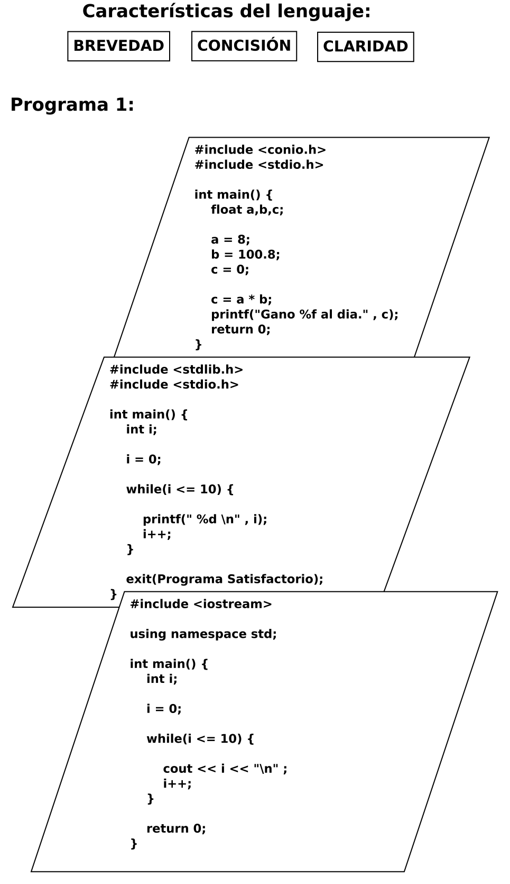

Ejemplos de lenguajes de programación:
Paradigma imperativo: programación estructurada; C++, programación procedimental, programación modular.
Paradigma declarativo: programación lógica; Prolog, programación funcional; Java, Scala.
Paradigma orientada a objetos: Java, Phyton.
Paradigma reactivo: JavaScript.
Programa 1: Presentar un programa que, calcule el sueldo diario que es de 8 horas máximo. Si se trabajan por hora al día y el sueldo por hora es de 100.80 pesos. El programa debe presentar en consola : Gano 800 al día.
Solución:

Pizarrón, archivo dia: ParadigmasProgramacion2020/PpEjemplo1.dia